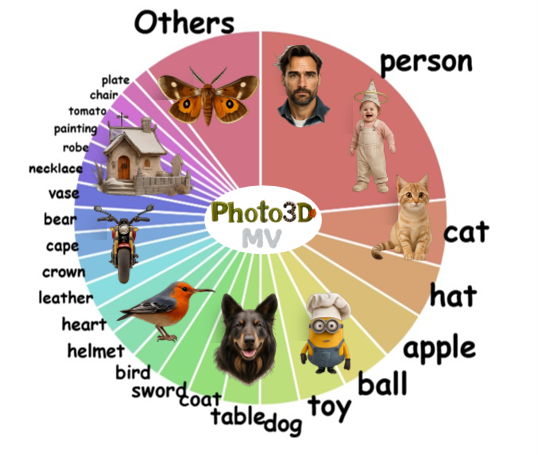

Photo3D‑MV Dataset

Photo3D‑MV is constructed through a structure‑aligned multi‑view synthesis pipeline. We convert text prompts into object‑centric descriptions, generate images with Flux.1‑Dev, reconstruct 3D assets using Trellis, and refine multi‑view renderings with GPT‑4o‑Image. The resulting photorealistic views, text descriptions, and 3D assets together form the Photo3D‑MV dataset.
Photo3D‑MV contains 10k objects across 373 categories. Each object includes four realistic views and the corresponding 3D assets.